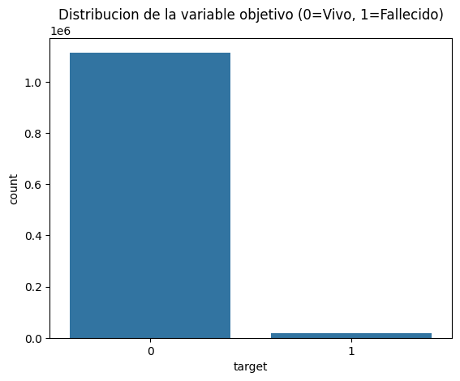
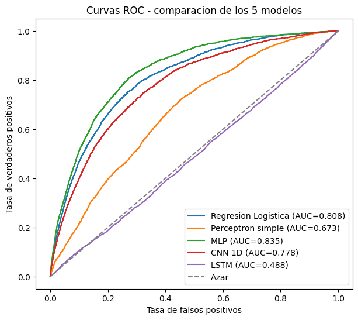
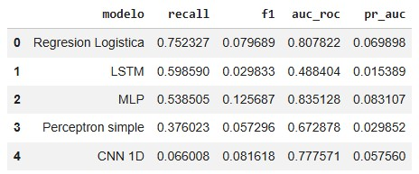
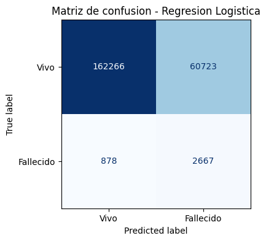
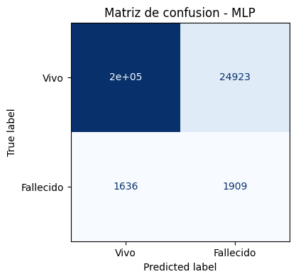
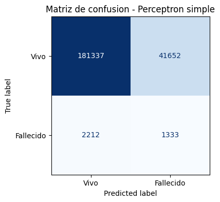
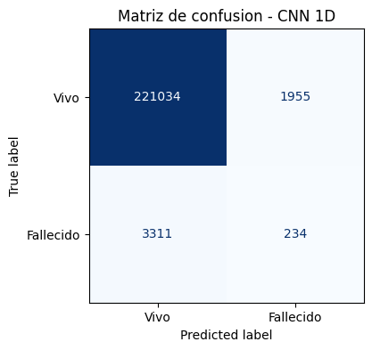
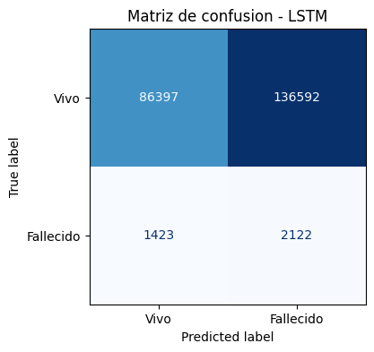

Análisis de Patrones Históricos y Comparativa de Modelos
Evaluación epidemiológica y experimental basada en el registro consolidado de 1,132,667 egresos hospitalarios del Instituto Nacional de Estadística y Censos (INEC) durante el año 2024.
1,132,667
626 establecimientos en 24 provincias1,114,943
98.44% de la población hospitalaria17,724
1.56% tasa basal de mortalidad75.23%
Regresión Logística (ROC-AUC: 0.8078)1. Distribución del Desenlace y Desbalance de Clases

Figura 1: Proporción de egresos vivos (98.44%) vs fallecidos (1.56%) en el registro nacional 2024.
Hallazgos Epidemiológicos Clave
- Desbalance Extremo (1:63): Por cada paciente fallecido se registran aproximadamente 63 pacientes que egresan con vida.
- Impacto en el Modelado de IA: Modelos ingenuos que predicen "Vivo" para todos obtienen 98.44% de exactitud pero 0% de utilidad médica.
- Tratamiento con SMOTE: Se equilibró la distribución en entrenamiento a 891,954 casos por clase para forzar a los clasificadores a aprender patrones de riesgo crítico.
2. Evaluación y Curvas ROC Comparativas (5 Familias de IA)

Figura 2: Curvas ROC evaluadas sobre 226,534 pacientes nunca antes vistos (Conjunto de Prueba 20%).
Análisis del Desempeño de los Modelos
- MLP (Red Neuronal Densa): Obtuvo el mayor ROC-AUC global (0.8351) y mejor PR-AUC (0.0831), demostrando alta capacidad para ordenar el riesgo probabilístico.
- Regresión Logística (Modelo Seleccionado): Alcanzó el mayor Recall (75.23%) con un ROC-AUC sólido de 0.8078 y tiempo de respuesta inferior a 5 milisegundos.
- Perceptrón Simple: Logró un Recall del 37.60% y ROC-AUC de 0.6729.
- CNN 1D y LSTM: Tuvieron dificultades para converger en el espacio de características tabulares sin sobre-sesgarse.
3. Tabla Oficial de Rendimiento Experimental

Tabla 1: Métricas de evaluación rigurosa sobre el 20% estratificado de test (INEC 2024).
4. Matrices de Confusión por Modelo
Visualización de aciertos, falsos positivos y falsos negativos evaluados en 226,534 casos de prueba:
Regresión Logística (Seleccionado)

Recall: 75.23% | Detectó 2,667 fallecidos de 3,545
MLP (Keras)

ROC-AUC: 0.8351 | Mayor precisión y F1
Perceptrón Simple

Recall: 37.60% | Modelo lineal base
CNN 1D (Keras)

Accuracy: 98.0% | Sesgo a clase mayoritaria
LSTM (Keras)

Recall: 59.86% | Alta tasa de falsos positivos